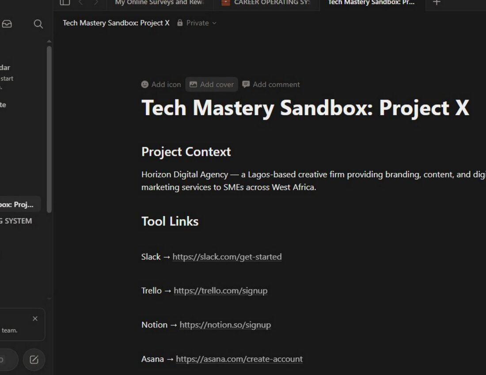
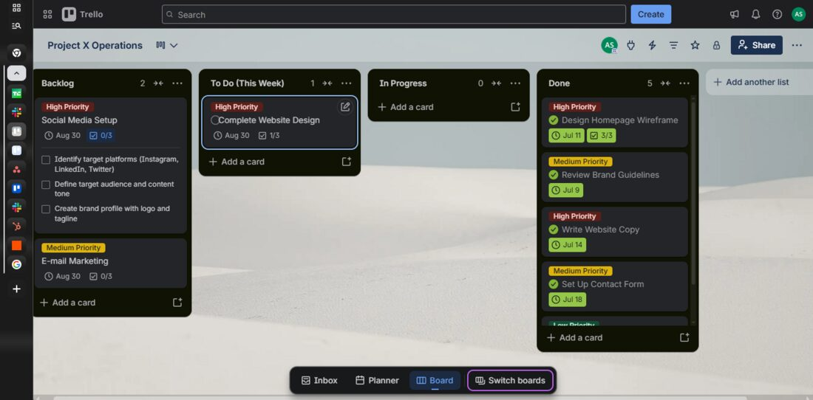
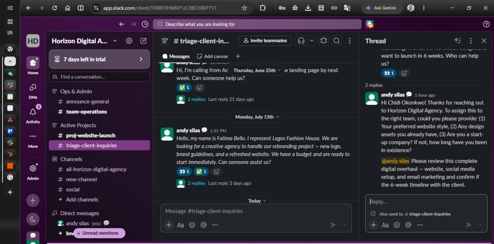

Administrative & Operations Professional · ALX Africa Certified Virtual Assistant · Lagos, Nigeria
7+ years running the admin, customer service, and operations side of businesses across retail, FMCG, IT services, consulting, and logistics — so founders and teams can focus on the work only they can do.
Andy has spent the last seven years inside the operational core of businesses — the calendars, the reconciliations, the escalations, the reports nobody sees but everybody relies on. His work spans executive assistance, customer relations, retail administration, and small-business operations, giving him a working fluency across the tools and rhythms of both corporate and founder-led teams.
He is currently completing a B.Sc. in Business Administration at Ahmadu Bello University and a 90-day enterprise tools program (Slack, Trello, Notion, Asana, HubSpot, Zapier), building toward remote-first, automation-aware operations work.
Calendar and inbox management, document and records systems, cross-functional coordination, and reporting — run with the same discipline as a compliance function, not an afterthought.
Front-line client relations across FMCG, retail, and B2B contexts — built around de-escalation, retention, and clear follow-up rather than scripted responses.
Anyone can list software on a resume. These are actual boards and workspaces built during the 90-Day Enterprise Tech program.



| Skill / Tool | Proficiency |
|---|---|
| Notion | Advanced |
| Trello | Advanced |
| Slack | Advanced |
| Asana | Intermediate |
| HubSpot CRM | Intermediate |
| Zapier | Learning |
| Google Workspace | Advanced |
| MS Office / Excel | Intermediate |
Levels above are estimates — adjust each bar's width (0–100%) to match your real proficiency before publishing.
One real example of how a process gets structured — this is the strongest proof for an Admin/Ops role, because it's evidence rather than a bullet point on a resume.
This is the same system behind the Case Study above — see it in action there.
Self-directed development work — not for a client, just to keep building.
There was no filing system. Stakeholder and supplier documents were kept wherever there was space, with no structure or labeling — anything older than two months was nearly impossible to find. POS transaction slips and End-of-Day reports were scattered around the office, and many had faded past the point of being readable, making it hard to track transactions accurately.
I started with physical ring binders labeled by stakeholder/supplier name, organized into monthly folders inside each. Once a laptop became available, I digitized the whole system — scanning every document into a matching folder structure for permanent, long-term storage. For the backlog of POS slips, I got approval to discard the faded, unusable ones and moved the rest into secure vault storage, freeing up the office space they'd been occupying. I also built an Excel tracker documenting the process, and made sure EOD reports were scanned and filed for consistent access across departments.
Document retrieval time dropped by roughly 40% — a request for a supplier's records that used to mean real digging could now be found by name and month within minutes, on paper and digitally alike.
Figures drawn directly from performance across previous roles — the kind of detail a reference call would confirm.
Record a short, unscripted intro — who you are, what you do best, and what kind of role you're looking for. Upload it to YouTube (unlisted) and replace the box below with the embed.
Ten years supervising a team of 10+ operators at a commercial printing press taught me that managing people has almost nothing to do with authority and everything to do with training. Deadlines in that environment were unforgiving — a late job meant a client's launch, event, or campaign slipped with it. The only way to hold that line consistently was to make sure every operator on the floor understood not just their task, but why it mattered to the job as a whole.
Training became the real lever. Every new operator I onboarded got walked through the full workflow — design, pre-press, delivery — not just their one station, because people who understand the whole process catch problems earlier than people who only know their piece of it. That habit of training for context, not just tasks, is the same instinct I bring to admin and operations work now: build the system once, document it clearly, and make sure it doesn't depend on any one person being in the room.
It's also where I learned that quality control and quality culture are two different things. Checking work catches mistakes after they happen. Training a team to care about the outcome catches them before they happen — and that's the difference between managing a shift and running an operation.